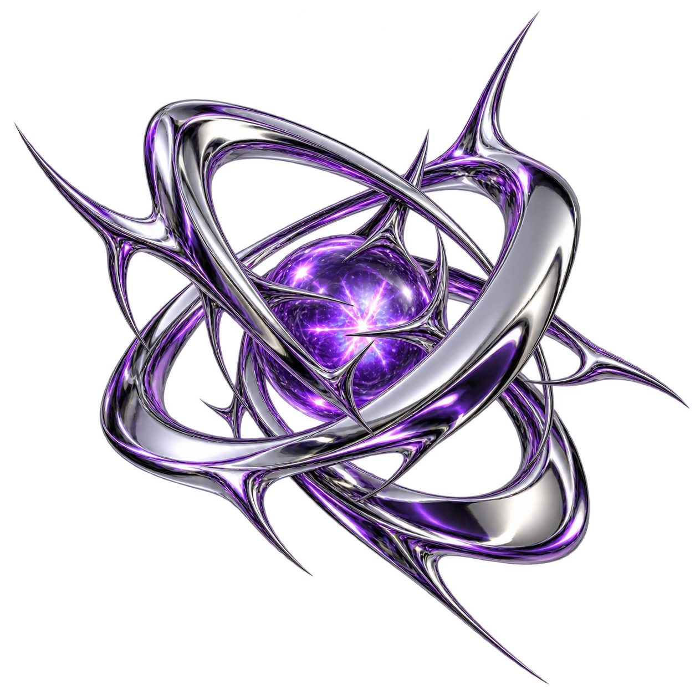
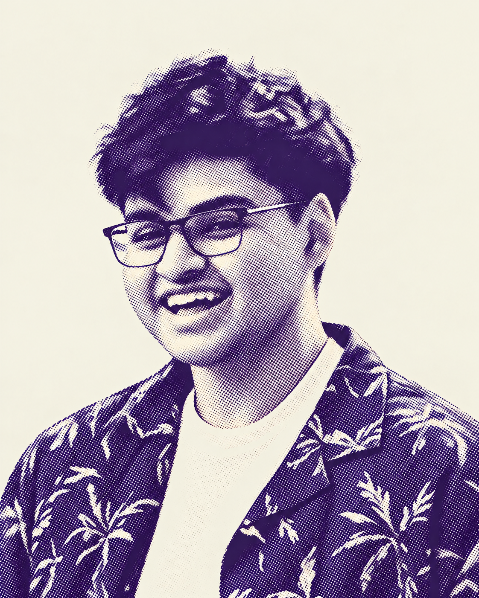

Trace syscalls and instrument macOS processes from userspace, without root.
(Coming to Linux soon)
slightly cooked.

BMATH @ UWATERLOOSystems, security, AI research.
And a lot of messing around.
Trace syscalls and instrument macOS processes from userspace, without root.
(Coming to Linux soon)
A reference to Mach IPC in XNU, with signatures, semantics, examples, and a searchable function index.
Run Raspberry Pi Pico programs on your desktop with a Python and Cython ARM emulator.
A Knucklebones opponent built with Monte Carlo Tree Search, RAVE, and a scoring heuristic.

I love tech. I love understanding how it works.
I study mathematics at Waterloo and spend my time exploring systems, security, and AI research. Usually by taking things apart, building something, or just messing around.
I built mtdi to trace and instrument macOS processes without root, and Ali’s Mach Docs as a practical reference to Mach IPC. Both were made to help me understand macOS from the inside.